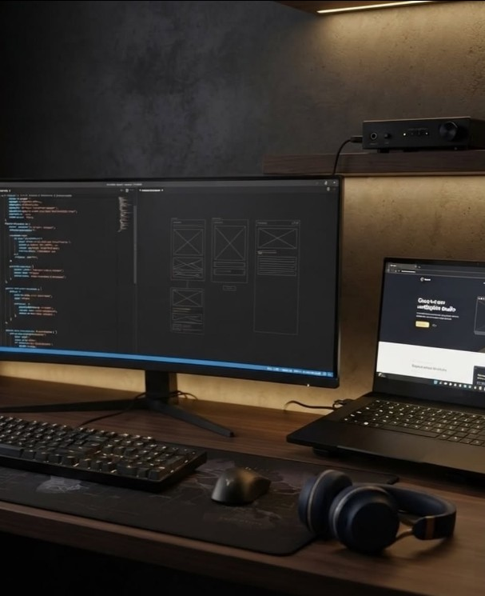

Quiénes somos
Un estudio de desarrollo pequeño, con una idea de fondo grande: lo que perdura se construye desde la base.

La marca
El «Lías» es el estrato más antiguo del Jurásico: la roca base sobre la que se asienta todo lo que vino después. Elegimos ese nombre porque resume lo que creemos: lo que se ve —una web rápida, una app que no se cae, un sistema seguro— siempre descansa sobre algo que no se ve.
LIA-S es un estudio de desarrollo y soluciones tecnológicas con una idea fija: lo que perdura no se levanta desde la superficie, sino desde la base. Por eso cada proyecto empieza por los cimientos —estructura, código limpio y decisiones sólidas— y se construye hacia arriba.
Desarrollo web y de aplicaciones, seguridad y rendimiento, bajo un mismo principio: crear soluciones que no solo impresionen el primer día, sino sobre las que un negocio pueda apoyarse durante años.
LIA-S. Bases sólidas para lo que viene.
En qué creemos
Los tres pilares sobre los que apoyamos cada proyecto, sin excepciones.
Código limpio y arquitecturas pensadas para durar, no solo para funcionar el primer día.
Buenas prácticas desde el diseño, y curiosidad genuina por entender cómo se ataca de verdad un sistema.
Cada decisión técnica se mide también por su impacto en velocidad, escalabilidad y experiencia de usuario.
Hacia dónde vamos
Los cimientos ya están puestos. Esto es en lo que estamos trabajando y lo que nos gustaría explorar a partir de aquí.
Última versión lanzada fue, Beta 0.7 de MacroLens, con mejoras de precisión y estabilidad, Proyecto cerrado, aplicación en propiedad de la empresa. Para más info, contáctanos.
El sitio que estás viendo: refactorizado, bilingüe y pensado para crecer con nuevas páginas a medida que LIA-S crece.
Una idea que nos ronda: desarrollar un videojuego propio. Todavía en fase de exploración, sin fecha ni promesa — pero con ganas.
El objetivo principal es combatir la 'fatiga musical' causada por los algoritmos de retención tradicionales, es un proyecto que esta en estudio y que busca revolucionar la forma en la que escuchamos música.
Desarrollo de una página web que funcione como buscador y repositorio de noticias de actualidad o temas específicos. El valor añadido principal es su integración con plataformas o redes sociales para ofrecer el contenido informativo a través de vídeos cortos y entretenidos.
Investigando una plataforma de escaneo de vulnerabilidades automatizada. La idea es usar contenedores efímeros (Docker) que analicen webs de clientes y se destruyan al terminar, garantizando entornos 100% aislados.
Explorando el uso de modelos de lenguaje en local (Ollama) para analizar webs y generar mejoras SEO automáticas. El objetivo: ofrecer optimización impulsada por IA garantizando que los datos del cliente nunca salen de nuestros servidores.